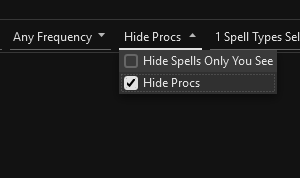

Regex 101
🔹 Basics
.— Matches any single character (except new line)
Example:a.cmatches "abc", "axc", "a-c", etc.*— Means "zero or more" of the thing before it
Example:a*matches "", "a", "aa", "aaa", etc.+— Means "one or more" of the thing before it
Example:a+matches "a", "aa", "aaa", but not "" (empty)?— Makes the thing before it optional (zero or one)
Example:colou?rmatches "color" or "colour"[...]— Matches one character from inside the brackets
Example:[abc]matches "a", "b", or "c" (just one of them)[^...]— Matches one character NOT in the brackets
Example:[^0-9]matches any character that's NOT a number
🔹 Anchors (Position Matchers)
^— The start of the line/text
Example:^Hellomatches only if "Hello" is at the very start$— The end of the line/text
Example:bye$matches only if "bye" is at the very end
🔹 Shortcuts (Character Types)
\d— Any digit (0 to 9)\w— Any word character (letter, digit, or underscore)\s— Any whitespace (space, tab, etc.)\b— The edge of a word (word boundary)
🔹 Grouping and OR
( ... )— Groups things together
Example:(cat|dog)matches "cat" or "dog"|— Means "or"
Example:yes|nomatches "yes" or "no"
🔹 Specials
\— Escapes a special character so it’s treated as normal
Example:\.matches a real dot, not "any character"- Special Character List: . ^ $ * + ? ( ) [ ] { } \ | /
🔹 Counts (Repetition)
{n}— Exactly n times
Example:a{3}matches "aaa" only{n,}— At least n times
Example:a{2,}matches "aa", "aaa", "aaaa", etc.{n,m}— Between n and m times
Example:a{2,4}matches "aa", "aaa", or "aaaa"
⚠️ .NET Regex Syntax
- No slashes needed: Just type your pattern (don’t use
/like this/) - Case-sensitive by default: "cat" doesn’t match "Cat"
- Spaces and punctuation: They must match exactly as typed
- Named groups are supported: You can name parts with
(?<name>...) - Don’t use
$1,$2, etc.: These are not used as Group references
🚀 Performance Tips
- Keep patterns simple and specific for fastest results.
- Avoid
.*in the middle of patterns; use only if necessary. - Don’t nest lots of parentheses or use complex patterns.
- Start with a specific word or phrase (e.g.,
^You take) instead of wildcards. - Don’t match entire blocks of text or paragraphs.
- Avoid long runs of wildcards and optionals (like
(.*a.*)*).
Trigger Variables
These are special variables or codes that can be used in trigger Pattern fields to capture values so that they can be displayed or spoken.
None of these trigger variables are case-insensitive. Whether you use {c} or {C} they will do the same thing. Also, if you define one variable as {S} and reference it later as {s} it will still work. The x value in {Sx} or {Nx} is any number from 0 to 9 so you can use more than one of these in the same trigger.
In addition, modifiers may be used with these variables for display purposes. They do not function in any of the Pattern fields but will work in the display fields. These modifiers include .number, .capitalize, .lower, and .upper. Number will format number values based on region. For example, in the U.S., they will be formatted with commas. The other options are self-explanatory.
Example Usage when using Modifiers: {S1.capitalize} {n.number}
{C}
Replaced by your character name. Use it in any Pattern field as well as all other fields that display, speak, or share information including timer warnings. Everything.
{S}, {Sx}
Acts as a wildcard to capture values in Pattern fields. It will capture anything, including multiple words, and allow the value to be used later in any fields that displays, speaks, or shares information. Requires Regex to be enabled; internally, the parser replaces {s1} with (?<s1>.+).
{N}, {Nx}
Like {S} but captures numbers (no spaces or multiple numbers are allowed). Also, allows the value to be used later in any fields that displays, speaks, or shares information.
{N>y}, {y<N<z}
Works like {N} but allows additional checks on the range of numbers that will match the trigger. Use operators like >, <, >=, <=, or ==. Use | to combine. Example: {100<=N<200} to match numbers between 100 and 200.
{L}
Replaced by the line that triggered the event minus the date/time segment. Useful for testing and seeing the full line that matched. Available only in the Text to Display, Text to Speak, and Alternate Timer Name fields.
{LOGTIME}
Replaced by the time from the line that triggered the event in the hh:mm:ss format. Useful if you want to know the time the trigger was fired. Available only in the Text to Display, Text to Speak, Text to Send, and Alternate Timer Name fields.
{REPEATED}
This variable is replaced with the number of times the trigger has been repeated and has captured the same values that have been used to display or speak information. Available only in Text to Display, Text to Speak, and Alternate Timer Name. Example Text to Display: {s1} {repeated}. This will print the count of how many times the trigger is fired with the same value captured by {s1}. The count resets after 750ms and this reset time can be configured by setting the Repeated Reset Time of the trigger.
{COUNTER}
Similar to {REPEATED} but it counts the number of times the trigger has fired regardless of the variables captured and used in the display or speak information fields. This variable also uses the Repeated Reset Time field to specify the delay used to restart the count.
{TS}
Like {S} but used to capture a timestamp in the format hh:mm:ss or any number which will be counted as seconds. Requires Regex to be enabled. Used only to dynamically set the Timer Duration.
{NULL}
Used in any field that displays, speaks, or shares information to suppress the message entirely. Useful when overriding Timer End Early behavior. If {NULL} is set then nothing will be displayed or spoken.
{TIMER-WARN-TIME-VALUE}
Replaced by the Timer setting for Warn With Time Remaining. This allows your Display/Speak messages to reference this Trigger configuration value if needed. More variables like this could be added in the future where configuration settings are made available when triggers run.
{EQLP:STOP}
Not a trigger variable. You send this text as a say, to the group, raid, another player, or custom channel if you want your triggers to reload, overlays to close, and audio to stop. The chat you send needs to start with this code and it's limited to ensure that it came from you.
{EQLP:STOP}
Not a trigger variable. You send this text as a say, to the group, raid, another player, or custom channel if you want your triggers to reload, overlays to close, and audio to stop. The chat you send needs to start with this code and it's limited to ensure that it came from you.
Linux Support
EQLogParser has been officially supporting Linux since version 2.2.66 with only minor issues. Note that the 64bit version of WINE is required.
Simplest Install: Flatpak + Bottles
The easiest way to get EQLogParser running on Linux is using Flatpak and Bottles. Bottles is a Wine management app that handles all the setup for you, and Flatpak is the recommended way to install it.
Step 1 — Install Flatpak and Bottles
Open a terminal and run the following commands:
# Install Flatpak
sudo apt install flatpak
# Add the Flathub repository (where Bottles is hosted)
flatpak remote-add --if-not-exists flathub https://dl.flathub.org/repo/flathub.flatpakrepo
# Install Bottles
flatpak install flathub com.usebottles.bottles
Step 2 — Launch Bottles
Start Bottles using the following command. The PERSONAL_INSTALLERS variable tells it where to find the EQLogParser installer:
PERSONAL_INSTALLERS=https://raw.githubusercontent.com/kauffman12/programs/refs/heads/main flatpak run com.usebottles.bottles
Tip: You can save this as a shell script or desktop shortcut so you don't have to type it every time.
Step 3 — Create a New Bottle
Once Bottles is open:
- Click Create a New Bottle
- When prompted for the bottle type, select Custom
- Make sure the architecture is set to 64-bit
- Change the Runner to Wine
- Click Create and wait for Bottles to finish setting up the environment
Step 4 — Install EQLogParser
After the bottle is created:
- Click the Install App button inside your new bottle
- Find and select EQLogParser from the list of available apps
- Follow any on-screen prompts to complete the installation
Step 5 — Run EQLogParser
Once installation is finished, simply click the Run App button to launch EQLogParser. That's it — no manual Wine configuration required!
Manually installing without Flatpak/Bottles
Download EQLogParser and the .Net 8.0 Desktop Runtime x64 found here.
Use the following steps to install under Linx (tested on Ubuntu/Debian-based systems):
sudo apt install wine # (version 10)
sudo apt install winetricks # (version 20250102-1)
winetricks allfonts
winetricks renderer=gdi
wine windowsdesktop-runtime-8.0.25-win-x64.exe # (or latest)
wine EQLogParser-install-2.3.49.exe # (or latest)
Known Issues with Linux
- WPF applications are unstable with WINE so hardware acceleration is disabled
- Note the WINELOADER environment variable is used to detect WINE
- Make sure that variable exists if you notice problems
- The EQLogParser log file should show Software as the RenderMode
- Log file location: ~/.wine/drive_c/users/username/AppData/Roaming/EQLogParser/logs
- WINE x64 does not work with any windows text-to-speech engine
- Piper TTS is provided as an alternative but requires manual Installation
- The bottles install comes with 1 voice pre-loaded
- Follow steps below for all voices
Piper TTS
Piper TTS is an Open Source text-to-speech engine and a custom build is provided for EQLogParser. It is hosted on google drive and may be subject to a limited number of downloads per day/month.
- Download the PiperTTS zip file
- Unzip into ~/.wine/drive_c/Program Files/EQLogParser/piper-tts
- Verify it was unzipped properly
- The piper-tts folder contains dlls and a voices folder
- The piper-tts folder should be directly under the EQLogParser folder
- Restart EQLogParser. Note that the log file should tell you that it's using piper-tts
- Test changing voices in the Trigger Manager window
F.A.Q
Why do spells like Gracious Gift of Mana not show up in the spell counts table?
- Some spells do not have messages when they land players and do not appear in the log
- For Gracious Gift of Mana, it has a spell message but only you can see it in your log. These spells are hidden by default as the main purpose of the spell count table is to compare your spell counts with other players
- To view hidden spells, use the dropdown at the top as shown below:

Why does unknown or spell names show in the DPS Summary?
- If a DoT is on an NPC and the player dies or zones it may stop reporting the player and say unknown instead
- Check the damage breakdown for the Unknown player to get a better idea of the cause
- Unknown is also included to make sure all damage is counted for the group or raid
- If a name of a spell is listed in the DPS Summary it may be for a similar reason
- Sometimes if the spell is a proc or other effect related to a DoT where the player has left the zone it may now create an older style entry in the log file where the spell name is in the position of where the player name usually is and the player name is absent. This case should be fairly rare.
- Make sure Use EMU Server Parsing is turned off if you're playing on live.
When using Trigger Log, I would like a quick way to edit the Trigger for the log entry.
- When you select a row in the Trigger Log it will select the trigger in the Trigger Manager as long as you have it open. If so, just switch back to that tab and check
- The second way to quickly find a trigger is to use the Trigger Search box above the folder tree where you create triggers. It searches by name and by the pattern fields
- You may also find it useful to drag-and-drop the Trigger Log or Trigger Manager tabs around so that you can see both at the same time as shown below:
Why are my Overlays not showing or they use the wrong colors?
- Specify the Overlay in the Trigger settings or verify that default is checked in the Overlay.
- The default Overlay is the fallback when no other Overlay is specified.
- Preview the Overlay and make sure it is displaying as you're expecting. Remember to save changes.
- Check the Custom Active Color and Custom Font Color in the trigger you are testing with.
- If these colors are specified they will override what the overlay is configured with.
- Even if they say Click to Select Custom Color try clicking and saving with a color as a test.
- Example images will be shown below.
- If in advanced mode, check Overlay Active Color and Overlay Font Color when you modify your character settings.
- These options are another way to choose custom colors. Sometimes they get set by accident.
- One common issue is that Transparent gets selected which makes it look like the timer never displays.
- In both cases above, it may help to set a color and see if it does anything. If so go back and reset/clear the value.
When using one of the right-click Copy options or sending a Quick Share. Nothing is copied.
- Check the error log for the message below. If you see it then your anti-virus software is blocking access. You'll need to figure out how to add an exception for EQLogParser.exe. This seems to be common with ESET and you may want to look for the HIPS settings and see if you can add the exception there.
- ERROR EQLogParser.UiUtil - Failed to set Clipboard Text: OpenClipboard Failed (0x800401D0 (CLIPBRD_E_CANT_OPEN))
- If you do not see an error and it is only happening with Send Parse to EQ. Keep in mind that Everquest has a limit on how many characters you can paste. If you open the Preview Parse window you'll see a count and warning if you copy too much.
Why does my Charm Pet or Merc not show up correctly in the Summary table?
- The main reason for this is naming. The parser is not good at handling names that do not look like player names. Player names are all one word
- Charm pets are additionally difficult as there's no way to distinguish the pet from an npc and if you fight an npc with the same name it can't figure out what's going on
- The name problem can be improved upon but it is complicated and something will be worked on in the future
Feedback
Please use the Discussion and Issues links at the top right of this page for submitting feedback. They will take you to the Github project for EQLogParser where everything is kept.
Guidelines
- Create account on Github if you do not have one already
- Login and post a message in either the Issues or the Discussion section
- Reading through the existing topics to see if your question has been answered before
- Bugs or feature requests should be created as an Issue
- General questions should be created in the Discussion section
- When reporting a bug be as detailed as possible
- Are you on Live servers or P99?
- What steps were taken to produce the bug?
- What is the result you were expecting?
- What have you already tried to resolve the issue?
- Are you using the latest EQLogParser?
- Have you checked the error log from the Tools menu?
- When checking the error log look for any exceptions or ERROR statements, etc
- If a bug is related to data not being parsed or a trigger not matching
- Include the line from your log file that has the data
- If trigger related then include the Regex or screenshot of your Trigger settings